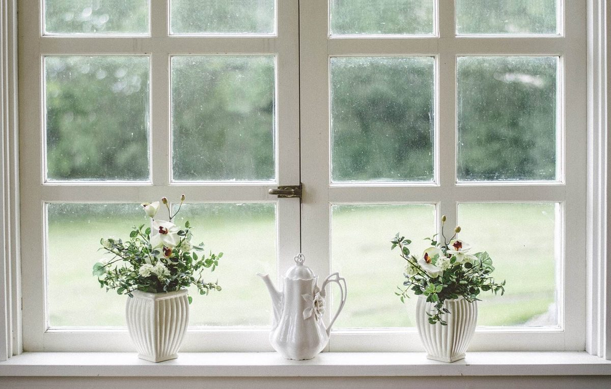
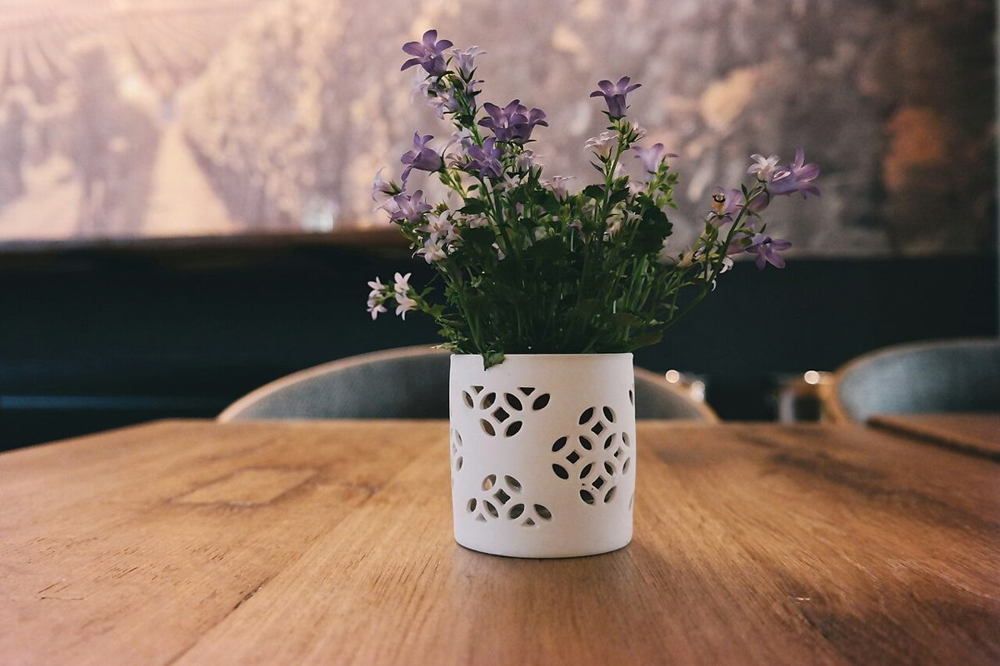

店のこと
店のこと
お店について確認できているのは、所在地・電話番号・Instagramのアカウントです。
このページの「想像してみる」部分は、制作側が想像して書いたものです。お店の実際の様子・考え・メニューとは関係がありません。
確認できていること
- 店名は「cafe selen」、業種はカフェ
- 所在地は兵庫県豊岡市日高町山宮1376(〒669-5368)
- 電話番号は 0796-20-2034
- Instagramは @cafe_selen
- 営業時間・定休日・メニュー・価格・ご予約・駐車場は準備中

想像してみる
「selen」という名前から
由来は分かりません。制作側は響きから月を連想し、夜にそっと灯る明かりのようなお店かもしれない、と想像しました。あくまで制作側の連想で、実際のお店の姿ではありません。


